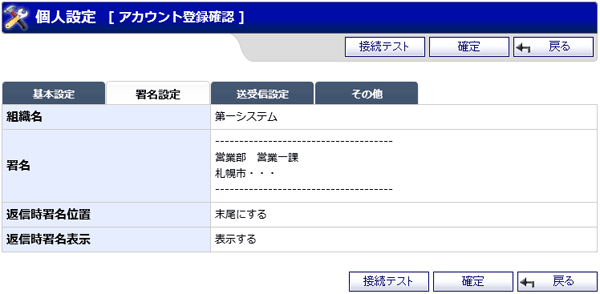

WEBメールの個人設定アカウント登録確認画面です。
タブを切り替えることによって、設定項目を切り替えることができます。
設定項目の表示の違いは下記を参照してください。
基本設定の場合
署名設定の場合

送受信設定の場合
その他の場合
機能説明
接続テストボタン表示している内容で接続テストを行います。 |
確定ボタン表示している内容でアカウント登録を行い、完了画面へ遷移します。 |
|---|---|
戻るボタン遷移元の画面へ遷移します。 |
基本設定タブ基本設定画面を表示します。 |
署名設定タブ署名設定画面を表示します。 |
送受信設定タブ送受信設定画面を表示します。 |
その他タブその他画面を表示します。 |
表示・入力項目説明
基本設定の場合
アカウント名
アカウント名を表示します。
メールアドレス
メールアドレスを表示します。
メール受信サーバ名
メール受信サーバ名を表示します。
メール受信サーバ名 ポート番号
メール受信サーバポート番号を表示します。
受信サーバ ユーザ名
受信サーバ ユーザ名を表示します。
受信サーバ パスワード
受信サーバ パスワードを表示します。
メール送信サーバ
メール送信サーバ名を表示します。
メール送信サーバ名 ポート番号
メール送信サーバポート番号を表示します。
SMTP認証ON/OFF
SMTP認証の設定状態を表示します。
メール送信サーバ ユーザ名
メール送信サーバ ユーザ名を表示します。
メール送信サーバ パスワード
メール送信サーバ パスワードを表示します。
ディスク容量
ディスク容量の最大値を表示します。
備考
備考を表示します。
代理人
アカウントの使用者を表示します。
署名設定の場合
組織名
組織名を表示します。
署名
署名を表示します。
返信時署名位置
返信時署名位置を表示します。
返信時署名表示
返信時署名表示の設定を表示します。
送受信設定の場合
自動TO
自動TOを表示します。
自動CC
自動CCを表示します。
自動BCC
自動BCCを表示します。
受信時削除
受信時削除の設定状態を表示します。
受信済みでも受信
受信済みでも受信の設定状態を表示します。
APOPのON/OFF
APOPの設定状態を表示します。
送信前POP認証
送信前POP認証の設定状態を表示します。
送信文字コード
送信文字コードの設定状態を表示します。
自動受信
自動受信の設定状態を表示します。
自動受信間隔
自動受信間隔を表示します。
送信メール形式
送信メール形式の設定状態を表示します。
宛先の確認
宛先の確認を表示します。
添付ファイルの確認
添付ファイルの確認を表示します。
添付ファイル自動圧縮
添付ファイル自動圧縮を表示します。
添付ファイル自動圧縮 初期値
※添付ファイル自動圧縮に"作成時に選択"を設定した場合のみ。
メール作成時に指定する「添付ファイルの自動圧縮」の初期値を表示します。
時間差送信
時間差送信を表示します。
時間差送信 初期値
※時間差送信に"作成時に選択"を設定した場合のみ。
メール作成時に指定する「時間差送信」の初期値を表示します。
その他の場合
テーマ
テーマを表示します。